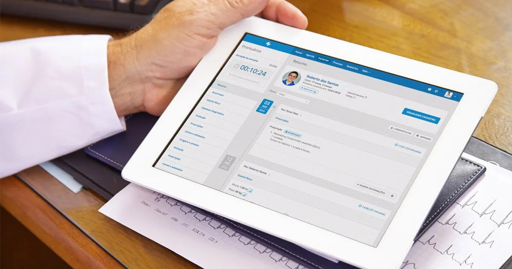

Acesso ao prontuário durante a Teleconsulta
Tenha total acesso ao prontuário do Uniclinic durante a Teleconsulta, podendo consultar informações
prévias e preencher dados novos.

Compartilhamento de tela com o paciente
Compartilhe a visualização da sua tela durante a Teleconsulta, demonstrando em tempo real
informações
que podem auxiliar seu atendimento, como resultados de exames ou imagens de antes e depois de
procedimentos.
Gravação da Teleconsulta
Utilize as gravações opcionais da Teleconsulta para registrar pontos importantes que você deseja
retomar
mais tarde. As gravações, que são documentadas nos Termos de Uso da Teleconsulta, ainda podem ser
anexadas aos prontuários dos pacientes.
Lembretes de Teleconsulta por WhatsApp
Diminua as faltas da sua clínica com lembretes automáticos de consulta enviados pelo WhatsApp, um
canal
que seus pacientes já utilizam em seu dia a dia.
Agendamento Online da Teleconsulta
Otimize o trabalho da sua recepção com o Agendamento Online de Teleconsultas, oferecendo uma
experiência
mais prática e inovadora desde o pré-consulta.